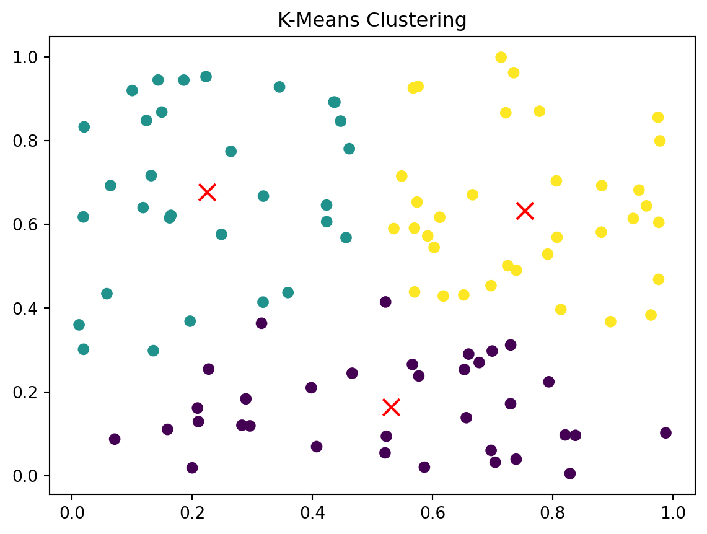
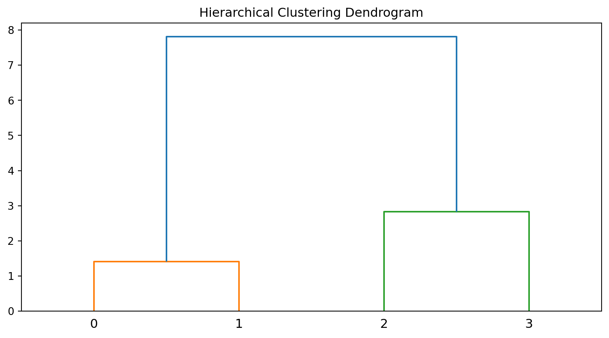
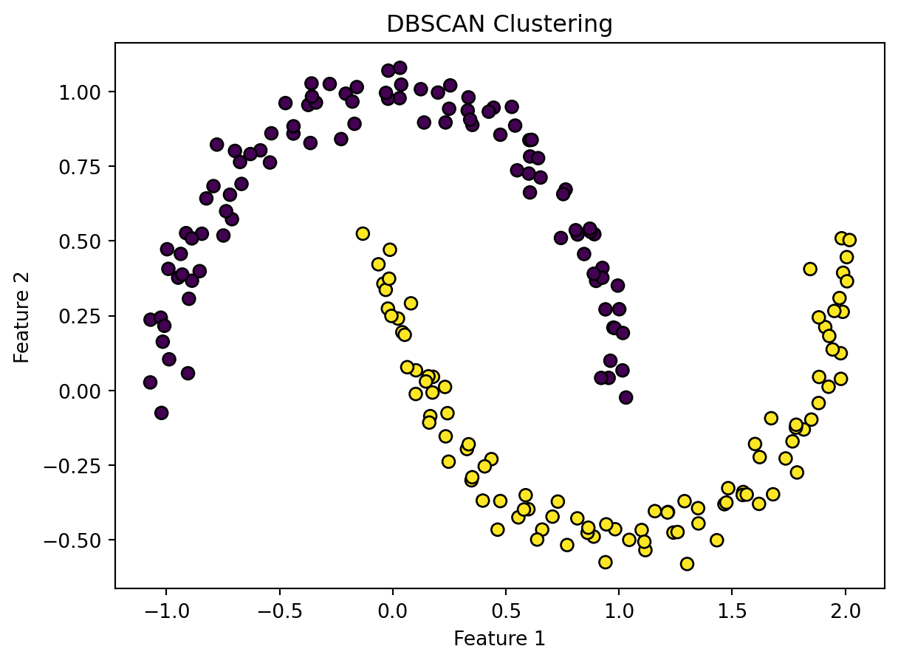

In machine learning, clustering is a technique used to group a set of data points into subsets, or clusters, based on the inherent similarities among them. The primary goal of clustering is to partition the data in such a way that points within the same group are more similar to each other than they are to points in other groups.
The process involves organizing data points into clusters by considering certain features or characteristics, without explicit guidance on what those features should be. Unlike supervised learning, where the algorithm is trained on labeled data with predefined categories, clustering is considered unsupervised learning because it deals with unlabeled data, seeking to uncover hidden patterns or structures.
Application of Clustering in Machine Learning
K-Means Clustering
K-Means is a partitioning clustering algorithm that divides data into K clusters. It works by minimizing the sum of squared distances between data points and their respective cluster centers.
Code
from sklearn.cluster import KMeansimport matplotlib.pyplot as pltimport numpy as np# Generate random data for demonstrationnp.random.seed(0)X = np.random.rand(100, 2)# Fit K-Means clustering modelkmeans = KMeans(n_clusters=3)kmeans.fit(X)# Visualize data points and cluster centersplt.scatter(X[:, 0], X[:, 1], c=kmeans.labels_)plt.scatter(kmeans.cluster_centers_[:, 0], kmeans.cluster_centers_[:, 1], c='red', marker='x', s=100)plt.title('K-Means Clustering')plt.show()
/Library/Frameworks/Python.framework/Versions/3.10/lib/python3.10/site-packages/sklearn/cluster/_kmeans.py:1416: FutureWarning: The default value of `n_init` will change from 10 to 'auto' in 1.4. Set the value of `n_init` explicitly to suppress the warning
super()._check_params_vs_input(X, default_n_init=10)

This visualization demonstrates K-Means clustering in action, with data points grouped into three clusters, and cluster centers shown in red.
Hierarchical Clustering
Hierarchical clustering builds a tree-like hierarchy of clusters. It can be represented as a dendrogram, which shows the relationships between data points and clusters at different levels.
Code
from scipy.cluster.hierarchy import dendrogram, linkageimport matplotlib.pyplot as plt# Generate sample data for hierarchical clusteringdata = np.array([[1, 2], [2, 3], [8, 8], [10, 10]])# Compute linkage matrixZ = linkage(data, 'single')# Create a dendrogramplt.figure(figsize=(10, 5))dendrogram(Z)plt.title('Hierarchical Clustering Dendrogram')plt.show()

This dendrogram visualizes the hierarchical clustering of sample data, showing the relationships between data points and clusters.
DBSCAN labels for the Scatter Plot
Code
import numpy as npimport matplotlib.pyplot as pltfrom sklearn.cluster import DBSCANfrom sklearn.datasets import make_moons# Generate synthetic data (you can replace this with your own dataset)X, _ = make_moons(n_samples=200, noise=0.05, random_state=0)# Apply DBSCAN clusteringdbscan = DBSCAN(eps=0.3, min_samples=5)labels = dbscan.fit_predict(X)# Plot the clustered dataplt.scatter(X[:, 0], X[:, 1], c=labels, cmap='viridis', edgecolors='k', s=40)plt.title('DBSCAN Clustering')plt.xlabel('Feature 1')plt.ylabel('Feature 2')plt.show()

We use the make_moons function from scikit-learn to generate synthetic data with two crescent moon-shaped clusters.
DBSCAN is applied with specified parameters (eps for the maximum distance between two samples and min_samples for the number of samples in a neighborhood for a point to be considered as a core point).
The resulting clusters are visualized using a scatter plot where points belonging to the same cluster share the same color.
Conclusion
Clustering algorithms are essential tools for finding patterns and grouping similar data points in machine learning. In this blog post, we explored three common clustering algorithms, K-Means, Hierarchical Clustering, and DBSCAN with Python implementations and visualizations. These techniques can be applied to various domains, including customer segmentation, image analysis, and more.
To deepen your understanding, experiment with different datasets and explore additional clustering algorithms like Gaussian Mixture Models, and Agglomerative Clustering. Visualization plays a crucial role in grasping the concepts and results of clustering.
---title: "Clustering"author: "Huayu Liang"date: "now"categories: [ML, visualization, clustering]image: "clustering.png"---Image from the source: [Analytics Yogi: When to Use Which Clustering Algorithms?](https://vitalflux.com/when-to-use-which-clustering-algorithms/)# Exploring Clustering with Python## What is Clustering?In machine learning, clustering is a technique used to group a set of data points into subsets, or clusters, based on the inherent similarities among them. The primary goal of clustering is to partition the data in such a way that points within the same group are more similar to each other than they are to points in other groups.The process involves organizing data points into clusters by considering certain features or characteristics, without explicit guidance on what those features should be. Unlike supervised learning, where the algorithm is trained on labeled data with predefined categories, clustering is considered unsupervised learning because it deals with unlabeled data, seeking to uncover hidden patterns or structures.## Application of Clustering in Machine Learning### K-Means ClusteringK-Means is a partitioning clustering algorithm that divides data into K clusters. It works by minimizing the sum of squared distances between data points and their respective cluster centers.```{python}from sklearn.cluster import KMeansimport matplotlib.pyplot as pltimport numpy as np# Generate random data for demonstrationnp.random.seed(0)X = np.random.rand(100, 2)# Fit K-Means clustering modelkmeans = KMeans(n_clusters=3)kmeans.fit(X)# Visualize data points and cluster centersplt.scatter(X[:, 0], X[:, 1], c=kmeans.labels_)plt.scatter(kmeans.cluster_centers_[:, 0], kmeans.cluster_centers_[:, 1], c='red', marker='x', s=100)plt.title('K-Means Clustering')plt.show()```This visualization demonstrates K-Means clustering in action, with data points grouped into three clusters, and cluster centers shown in red.### **Hierarchical Clustering**Hierarchical clustering builds a tree-like hierarchy of clusters. It can be represented as a dendrogram, which shows the relationships between data points and clusters at different levels.```{python}from scipy.cluster.hierarchy import dendrogram, linkageimport matplotlib.pyplot as plt# Generate sample data for hierarchical clusteringdata = np.array([[1, 2], [2, 3], [8, 8], [10, 10]])# Compute linkage matrixZ = linkage(data, 'single')# Create a dendrogramplt.figure(figsize=(10, 5))dendrogram(Z)plt.title('Hierarchical Clustering Dendrogram')plt.show()```This dendrogram visualizes the hierarchical clustering of sample data, showing the relationships between data points and clusters.### DBSCAN labels for the Scatter Plot```{python}import numpy as npimport matplotlib.pyplot as pltfrom sklearn.cluster import DBSCANfrom sklearn.datasets import make_moons# Generate synthetic data (you can replace this with your own dataset)X, _ = make_moons(n_samples=200, noise=0.05, random_state=0)# Apply DBSCAN clusteringdbscan = DBSCAN(eps=0.3, min_samples=5)labels = dbscan.fit_predict(X)# Plot the clustered dataplt.scatter(X[:, 0], X[:, 1], c=labels, cmap='viridis', edgecolors='k', s=40)plt.title('DBSCAN Clustering')plt.xlabel('Feature 1')plt.ylabel('Feature 2')plt.show()```- We use the **`make_moons`** function from scikit-learn to generate synthetic data with two crescent moon-shaped clusters.- DBSCAN is applied with specified parameters (**`eps`** for the maximum distance between two samples and **`min_samples`** for the number of samples in a neighborhood for a point to be considered as a core point).- The resulting clusters are visualized using a scatter plot where points belonging to the same cluster share the same color.## ConclusionClustering algorithms are essential tools for finding patterns and grouping similar data points in machine learning. In this blog post, we explored three common clustering algorithms, K-Means, Hierarchical Clustering, and DBSCAN with Python implementations and visualizations. These techniques can be applied to various domains, including customer segmentation, image analysis, and more.To deepen your understanding, experiment with different datasets and explore additional clustering algorithms like Gaussian Mixture Models, and Agglomerative Clustering. Visualization plays a crucial role in grasping the concepts and results of clustering.